GAT 59–80 media review
251 formula images → LaTeX · 7 image tables → editable tables · 54 drawings → SVG/JSON · 19 originals retained. Every source graphic appears once below. Use the filters to skim one category.
image1 · coordinate plot · Assignment 59, I
Source preview · reference page 1 Drawing recovered as vectors
Drawing recovered as vectors SVG · Drawing JSON · Original file · Source PDF
SVG · Drawing JSON · Original file · Source PDFimage2 · formula · Assignment 59, II
Source preview · reference page 1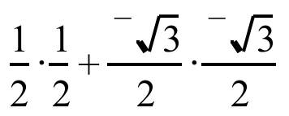
LaTeX candidateLaTeX source
\frac{1}{2}\cdot \frac{1}{2}+\frac{{}^{-}\sqrt{3}}{2}\cdot \frac{{}^{-}\sqrt{3}}{2}image3 · formula · Assignment 59, II
Source preview · reference page 2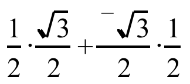
LaTeX candidateLaTeX source
\frac{1}{2}\cdot \frac{\sqrt{3}}{2}+\frac{{}^{-}\sqrt{3}}{2}\cdot \frac{1}{2}image4 · table · Assignment 59, III
Source preview · reference page 2 Image → editable tableabcdefgafaegbdcbabcdefgcecdagbfdgdaefcbebegfcadfdfbcagegcgfbdeaSVG · Drawing JSON · Structured data · Original file · Source PDF
Image → editable tableabcdefgafaegbdcbabcdefgcecdagbfdgdaefcbebegfcadfdfbcagegcgfbdeaSVG · Drawing JSON · Structured data · Original file · Source PDF
image5 · formula · Assignment 59, V
Source preview · reference page 2LaTeX candidateLaTeX source
\circ image6 · formula · Assignment 59, IX
Source preview · reference page 3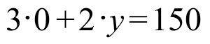
LaTeX candidateLaTeX source
3\cdot 0+2\cdot y=150image7 · formula · Assignment 59, IX
Source preview · reference page 3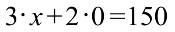
LaTeX candidateLaTeX source
3\cdot x+2\cdot 0=150image8 · formula · Assignment 59, IX
Source preview · reference page 3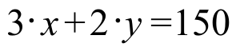
LaTeX candidateLaTeX source
3\cdot x+2\cdot y=150image9 · formula · Assignment 59, IX
Source preview · reference page 3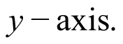
LaTeX candidateLaTeX source
y-\text{axis}\mathrm{.}image10 · formula · Assignment 59, IX
Source preview · reference page 3 LaTeX candidate
LaTeX candidateLaTeX source
x-\text{axis}\mathrm{.}image11 · formula · Assignment 59, X
Source preview · reference page 3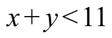
LaTeX candidateLaTeX source
x+y<11image12 · coordinate plot · Assignment 60, I
Source preview · reference page 5 Drawing recovered as vectors
Drawing recovered as vectors SVG · Drawing JSON · Original file · Source PDF
SVG · Drawing JSON · Original file · Source PDFimage13 · geometry · Assignment 60, II
Source preview · reference page 6 Drawing recovered as vectors
Drawing recovered as vectors
Some formula labels are small in the legacy preview and need layout review. Available native equations are exposed separately.
SVG · Drawing JSON · Structured data · Original file · Source PDFimage14 · formula · Assignment 60, II
Source preview · reference page 6 LaTeX candidate
LaTeX candidateLaTeX source
\ell image15 · formula · Assignment 60, III
Source preview · reference page 7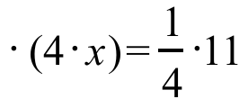
LaTeX candidateLaTeX source
\cdot \text{ }\mathrm{(}4\cdot x\mathrm{)}=\frac{1}{4}\cdot 11image16 · formula · Assignment 60, III
Source preview · reference page 7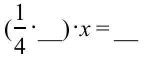
LaTeX candidateLaTeX source
\mathrm{(}\frac{1}{4}\cdot \mathrm{\_\_)}\cdot x=\mathrm{\_\_}image17 · table · Assignment 60, IV
Source preview · reference page 7 Image → editable tableabcdefgafaegbdcbabcdefgcecdagbfdgdaefcbebegfcadfdfbcagegcgfbdeaSVG · Drawing JSON · Structured data · Original file · Source PDF
Image → editable tableabcdefgafaegbdcbabcdefgcecdagbfdgdaefcbebegfcadfdfbcagegcgfbdeaSVG · Drawing JSON · Structured data · Original file · Source PDF
image18 · table · Assignment 60, IV
Source preview · reference page 8 Image → editable tableabcdefgafaegbdcbabcdefgcecdagbfdgdaefcbebegfcadfdfbcagegcgfbdeaSVG · Drawing JSON · Structured data · Original file · Source PDF
Image → editable tableabcdefgafaegbdcbabcdefgcecdagbfdgdaefcbebegfcadfdfbcagegcgfbdeaSVG · Drawing JSON · Structured data · Original file · Source PDF
image19 · formula · Assignment 60, IV
Source preview · reference page 8 LaTeX candidate
LaTeX candidateLaTeX source
\left[ \begin{matrix}1 & 0 \\ 0 & 1\end{matrix} \right]image20 · formula · Assignment 60, IV
Source preview · reference page 8 LaTeX candidate
LaTeX candidateLaTeX source
2\times 2image21 · formula · Assignment 61, I
Source preview · reference page 10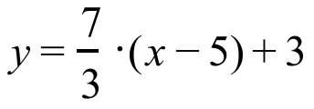
LaTeX candidateLaTeX source
y=\frac{7}{3}\cdot \mathrm{(}x-5\mathrm{)}+3image22 · formula · Assignment 61, I
Source preview · reference page 10 LaTeX candidate
LaTeX candidateLaTeX source
\text{a}\cdot x+\text{b}\cdot y=\text{c}image23 · screenshot · Assignment 61, I
Source preview · reference page 10 Original retainedOriginal retainedContains original raster artwork; retained as an image. Vector conversion is incomplete.
Original retainedOriginal retainedContains original raster artwork; retained as an image. Vector conversion is incomplete.Contains original raster artwork; retained as an image. Vector conversion is incomplete.
Original file · Source PDFimage24 · table · Assignment 61, II
Source preview · reference page 10 Image → editable tableabcdefgafaegbdcbabcdefgcecdagbfdgdaefcbebegfcadfdfbcagegcgfbdeaSVG · Drawing JSON · Structured data · Original file · Source PDF
Image → editable tableabcdefgafaegbdcbabcdefgcecdagbfdgdaefcbebegfcadfdfbcagegcgfbdeaSVG · Drawing JSON · Structured data · Original file · Source PDF
image25 · formula · Assignment 61, II
Source preview · reference page 10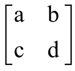
LaTeX candidateLaTeX source
\left[ \begin{matrix}\text{a} & \text{b} \\ \text{c} & \text{d}\end{matrix} \right]image26 · formula · Assignment 61, II
Source preview · reference page 10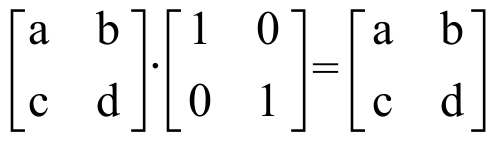
LaTeX candidateLaTeX source
\left[ \begin{matrix}\text{a} & \text{b} \\ \text{c} & \text{d}\end{matrix} \right]\cdot \left[ \begin{matrix}\text{1} & \text{0} \\ \text{0} & \text{1}\end{matrix} \right]=\left[ \begin{matrix}\text{a} & \text{b} \\ \text{c} & \text{d}\end{matrix} \right]image27 · formula · Assignment 61, II
Source preview · reference page 10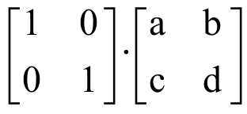
LaTeX candidateLaTeX source
\left[ \begin{matrix}\text{1} & \text{0} \\ \text{0} & \text{1}\end{matrix} \right]\cdot \left[ \begin{matrix}\text{a} & \text{b} \\ \text{c} & \text{d}\end{matrix} \right]image28 · formula · Assignment 61, II
Source preview · reference page 10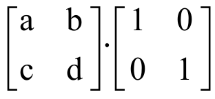
LaTeX candidateLaTeX source
\left[ \begin{matrix}\text{a} & \text{b} \\ \text{c} & \text{d}\end{matrix} \right]\cdot \left[ \begin{matrix}\text{1} & \text{0} \\ \text{0} & \text{1}\end{matrix} \right]image29 · table · Assignment 61, II
Source preview · reference page 11 Image → editable tableabcdefgafaegbdcbabcdefgcecdagbfdgdaefcbebegfcadfdfbcagegcgfbdeaSVG · Drawing JSON · Structured data · Original file · Source PDF
Image → editable tableabcdefgafaegbdcbabcdefgcecdagbfdgdaefcbebegfcadfdfbcagegcgfbdeaSVG · Drawing JSON · Structured data · Original file · Source PDF
image30 · reflection translation · Assignment 61, III
Source preview · reference page 11 Drawing recovered as vectors
Drawing recovered as vectors SVG · Drawing JSON · Original file · Source PDF
SVG · Drawing JSON · Original file · Source PDFimage31 · coordinate plot · Assignment 61, III
Source preview · reference page 12 Drawing recovered as vectors
Drawing recovered as vectors SVG · Drawing JSON · Original file · Source PDF
SVG · Drawing JSON · Original file · Source PDFimage32 · screenshot · Assignment 61, IX
Source preview · reference page 14 Drawing recovered as vectors
Drawing recovered as vectors SVG · Drawing JSON · Original file · Source PDF
SVG · Drawing JSON · Original file · Source PDFimage33 · coordinate plot · Assignment 61, IX
Source preview · reference page 14 Original retainedOriginal retainedContains original raster artwork; retained as an image. Vector conversion is incomplete.
Original retainedOriginal retainedContains original raster artwork; retained as an image. Vector conversion is incomplete.Contains original raster artwork; retained as an image. Vector conversion is incomplete.
Original file · Source PDFimage34 · coordinate plot · Assignment 61, IX
Source preview · reference page 14 Original retainedOriginal retainedContains original raster artwork; retained as an image. Vector conversion is incomplete.
Original retainedOriginal retainedContains original raster artwork; retained as an image. Vector conversion is incomplete.Contains original raster artwork; retained as an image. Vector conversion is incomplete.
Original file · Source PDFimage35 · coordinate plot · Assignment 61, IX
Source preview · reference page 15 Original retainedOriginal retainedContains original raster artwork; retained as an image. Vector conversion is incomplete.
Original retainedOriginal retainedContains original raster artwork; retained as an image. Vector conversion is incomplete.Contains original raster artwork; retained as an image. Vector conversion is incomplete.
Original file · Source PDFimage36 · formula · Assignment 61, X
Source preview · reference page 15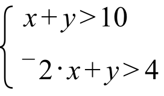
LaTeX candidateLaTeX source
\left\{ \begin{array}{l}x+y>10 \\ {}^{-}2\cdot x+y>4\end{array} \right.image37 · formula · Assignment 62, I
Source preview · reference page 16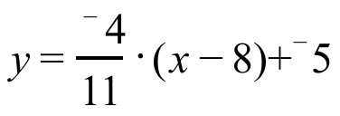
LaTeX candidateLaTeX source
y=\frac{{}^{-}4}{11}\cdot \mathrm{(}x-8\mathrm{)}+{}^{-}5image38 · coordinate plot · Assignment 62, II
Source preview · reference page 16 Drawing recovered as vectors
Drawing recovered as vectors SVG · Drawing JSON · Original file · Source PDF
SVG · Drawing JSON · Original file · Source PDFimage39 · formula · Assignment 62, III
Source preview · reference page 17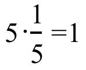
LaTeX candidateLaTeX source
5\cdot \frac{1}{5}=1image40 · formula · Assignment 62, III
Source preview · reference page 17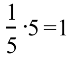
LaTeX candidateLaTeX source
\frac{1}{5}\cdot 5=1image41 · formula · Assignment 62, III
Source preview · reference page 17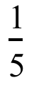
LaTeX candidateLaTeX source
\frac{1}{5}image42 · table · Assignment 62, III
Source preview · reference page 18 Image → editable tableelement-inverse of that elementabcdefgSVG · Drawing JSON · Structured data · Original file · Source PDF
Image → editable tableelement-inverse of that elementabcdefgSVG · Drawing JSON · Structured data · Original file · Source PDF
image43 · formula · Assignment 62, IV
Source preview · reference page 18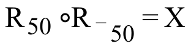
LaTeX candidateLaTeX source
\text{R}_{\text{50}}\circ \text{R}_{{}^{-}\text{50}}=\text{X}image44 · formula · Assignment 62, IV
Source preview · reference page 18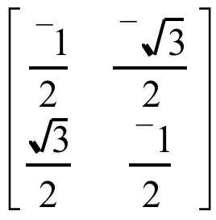
LaTeX candidateLaTeX source
\left[ \begin{matrix}\frac{{}^{-}1}{2} & \frac{{}^{-}\sqrt{3}}{2} \\ \frac{\sqrt{3}}{2} & \frac{{}^{-}1}{2}\end{matrix} \right]image45 · formula · Assignment 62, IV
Source preview · reference page 18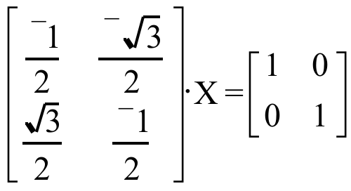
LaTeX candidateLaTeX source
\left[ \begin{matrix}\frac{{}^{-}1}{2} & \frac{{}^{-}\sqrt{3}}{2} \\ \frac{\sqrt{3}}{2} & \frac{{}^{-}1}{2}\end{matrix} \right]\cdot \text{X}=\left[ \begin{matrix}1 & 0 \\ 0 & 1\end{matrix} \right]image46 · formula · Assignment 62, VII
Source preview · reference page 19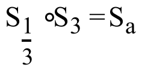
LaTeX candidateLaTeX source
\text{S}_{\frac{1}{3}}\circ \text{S}_{\text{3}}=\text{S}_{\text{a}}image47 · formula · Assignment 62, VII
Source preview · reference page 19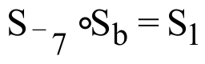
LaTeX candidateLaTeX source
\text{S}_{{}^{-}\text{7}}\circ \text{S}_{\text{b}}=\text{S}_{\text{1}}image48 · coordinate plot · Assignment 62, VIII
Source preview · reference page 19 Original retainedOriginal retainedContains original raster artwork; retained as an image. Vector conversion is incomplete.
Original retainedOriginal retainedContains original raster artwork; retained as an image. Vector conversion is incomplete.Contains original raster artwork; retained as an image. Vector conversion is incomplete.
Original file · Source PDFimage49 · coordinate plot · Assignment 62, IX
Source preview · reference page 20 Original retainedOriginal retainedContains original raster artwork; retained as an image. Vector conversion is incomplete.
Original retainedOriginal retainedContains original raster artwork; retained as an image. Vector conversion is incomplete.Contains original raster artwork; retained as an image. Vector conversion is incomplete.
Original file · Source PDFimage50 · formula · Assignment 62, X
Source preview · reference page 20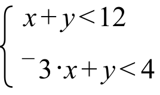
LaTeX candidateLaTeX source
\left\{ \begin{array}{l}x+y<12 \\ {}^{-}3\cdot x+y<4\end{array} \right.image51 · geometry · Assignment 63, I
Source preview · reference page 21 Drawing recovered as vectors
Drawing recovered as vectors SVG · Drawing JSON · Original file · Source PDF
SVG · Drawing JSON · Original file · Source PDFimage52 · formula · Assignment 63, II
Source preview · reference page 21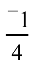
LaTeX candidateLaTeX source
\frac{{}^{-}1}{4}image53 · formula · Assignment 63, II
Source preview · reference page 21 LaTeX candidate
LaTeX candidateLaTeX source
\left\{ \begin{array}{l}\text{a}\cdot x+\text{b}\cdot y=\text{c} \\ \text{d}\cdot x+\text{e}\cdot y=\text{f}\end{array} \right.image54 · table · Assignment 63, III
Source preview · reference page 21 Image → editable tableabcdefgafaegbdcbabcdefgcecdagbfdgdaefcbebegfcadfdfbcagegcgfbdeaSVG · Drawing JSON · Structured data · Original file · Source PDF
Image → editable tableabcdefgafaegbdcbabcdefgcecdagbfdgdaefcbebegfcadfdfbcagegcgfbdeaSVG · Drawing JSON · Structured data · Original file · Source PDF
image55 · formula · Assignment 63, V
Source preview · reference page 22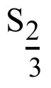
LaTeX candidateLaTeX source
\text{S}_{\frac{2}{3}}image56 · formula · Assignment 63, VII
Source preview · reference page 24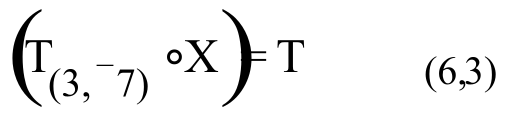
LaTeX candidateLaTeX source
\left( \text{T}_{\text{(3,}{}^{-}\text{7)}}\circ \text{X} \right)=\hspace{2.5em}\text{T}_{\text{(6,3)}}image57 · formula · Assignment 63, VII
Source preview · reference page 24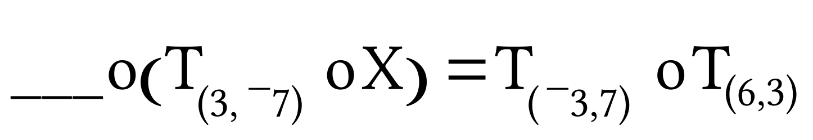
LaTeX candidateLaTeX source
\mathrm{\_\_\_}\circ \left( \text{T}_{\text{(3,}{}^{-}\text{7)}}\circ \text{X} \right)=\text{T}_{\text{(}{}^{-}\text{3,7)}}\circ \text{T}_{\text{(6,3)}}image58 · formula · Assignment 63, VII
Source preview · reference page 24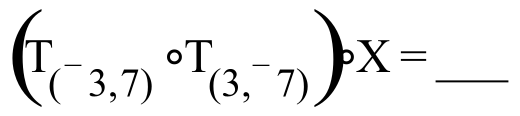
LaTeX candidateLaTeX source
\left( \text{T}_{\text{(}{}^{-}\text{3,7)}}\circ \text{T}_{\text{(3,}{}^{-}\text{7)}} \right)\circ \text{X}=\text{\_\_\_}image59 · formula · Assignment 63, VII
Source preview · reference page 24LaTeX candidateLaTeX source
\mathrm{\_\_\_}\circ \text{X}=\mathrm{\_\_\_}image60 · formula · Assignment 63, VIII
Source preview · reference page 24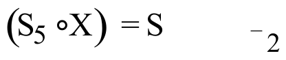
LaTeX candidateLaTeX source
\left( \text{S}_{5}\circ \text{X} \right)\text{ }=\hspace{2.5em}\text{S}_{{}^{-}2}image61 · formula · Assignment 63, VIII
Source preview · reference page 24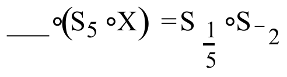
LaTeX candidateLaTeX source
\mathrm{\_\_\_}\circ \left( \text{S}_{5}\circ \text{X} \right)\text{ }=\text{ S}_{\frac{1}{5}}\circ \text{S}_{{}^{-}2}image62 · formula · Assignment 63, VIII
Source preview · reference page 24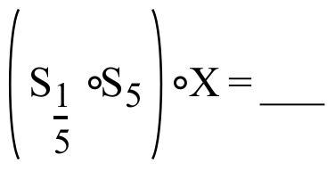
LaTeX candidateLaTeX source
\left( \text{S}_{\frac{1}{5}}\circ \text{S}_{5} \right)\circ \text{X}=\text{\_\_\_}image63 · formula · Assignment 63, VIII
Source preview · reference page 24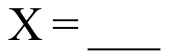
LaTeX candidateLaTeX source
\text{X}=\mathrm{\_\_\_}image64 · formula · Assignment 63, IX
Source preview · reference page 24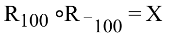
LaTeX candidateLaTeX source
\text{R}_{\text{100}}\circ \text{R}_{{}^{-}\text{100}}=\text{X}image65 · formula · Assignment 63, IX
Source preview · reference page 24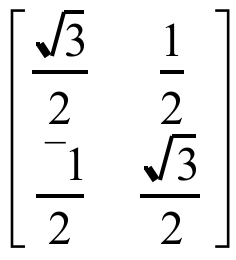
LaTeX candidateLaTeX source
\left[ \begin{matrix}\frac{\sqrt{3}}{2} & \frac{1}{2} \\ \frac{{}^{-}1}{2} & \frac{\sqrt{3}}{2}\end{matrix} \right]image66 · formula · Assignment 63, IX
Source preview · reference page 24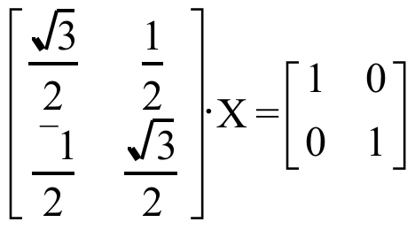
LaTeX candidateLaTeX source
\left[ \begin{matrix}\frac{\sqrt{3}}{2} & \frac{1}{2} \\ \frac{{}^{-}1}{2} & \frac{\sqrt{3}}{2}\end{matrix} \right]\cdot \text{X}=\left[ \begin{matrix}1 & 0 \\ 0 & 1\end{matrix} \right]image67 · coordinate plot · Assignment 63, X
Source preview · reference page 25 Original retainedOriginal retainedContains original raster artwork; retained as an image. Vector conversion is incomplete.
Original retainedOriginal retainedContains original raster artwork; retained as an image. Vector conversion is incomplete.Contains original raster artwork; retained as an image. Vector conversion is incomplete.
Original file · Source PDFimage68 · formula · Assignment 63, XI
Source preview · reference page 25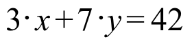
LaTeX candidateLaTeX source
3\cdot x+7\cdot y=42image69 · formula · Assignment 63, XI
Source preview · reference page 25 LaTeX candidate
LaTeX candidateLaTeX source
x-\text{axis}image70 · formula · Assignment 63, XI
Source preview · reference page 25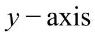
LaTeX candidateLaTeX source
y-\text{axis}image71 · geometry · Assignment 64, I
Source preview · reference page 26 Drawing recovered as vectors
Drawing recovered as vectors SVG · Drawing JSON · Original file · Source PDF
SVG · Drawing JSON · Original file · Source PDFimage72 · formula · Assignment 64, II
Source preview · reference page 26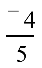
LaTeX candidateLaTeX source
\frac{{}^{-}4}{5}image73 · formula · Assignment 64, II
Source preview · reference page 26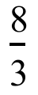
LaTeX candidateLaTeX source
\frac{8}{3}image74 · formula · Assignment 64, III
Source preview · reference page 26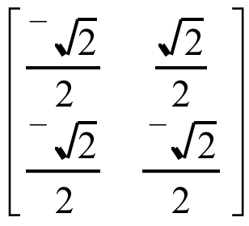
LaTeX candidateLaTeX source
\left[ \begin{matrix}\frac{{}^{-}\sqrt{2}}{2} & \frac{\sqrt{2}}{2} \\ \frac{{}^{-}\sqrt{2}}{2} & \frac{{}^{-}\sqrt{2}}{2}\end{matrix} \right]image75 · formula · Assignment 64, III
Source preview · reference page 26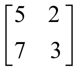
LaTeX candidateLaTeX source
\left[ \begin{matrix}5 & 2 \\ 7 & 3\end{matrix} \right]image76 · formula · Assignment 64, IV
Source preview · reference page 27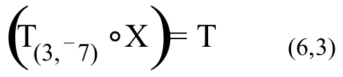
LaTeX candidateLaTeX source
\left( \text{T}_{\text{(3,}{}^{-}\text{7)}}\circ \text{X} \right)=\hspace{2.25em}\text{T}_{\text{(6,3)}}image77 · formula · Assignment 64, IV
Source preview · reference page 27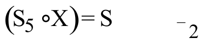
LaTeX candidateLaTeX source
\left( \text{S}_{\text{5}}\circ \text{X} \right)=\hspace{2.5em}\text{S}_{{}^{-}2}image78 · calculation flow · Assignment 64, IV
Source preview · reference page 27 Drawing recovered as vectors
Drawing recovered as vectors
Small legacy formula labels need review; the complete vector layout is retained.
SVG · Drawing JSON · Original file · Source PDFimage79 · formula · Assignment 64, IV
Source preview · reference page 28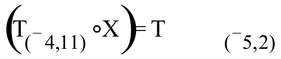
LaTeX candidateLaTeX source
\left( \text{T}_{\text{(}{}^{-}\text{4,}1\text{1)}}\circ \text{X} \right)=\hspace{2.5em}\text{T}_{\text{(}{}^{-}\text{5,2)}}image80 · formula · Assignment 64, IV
Source preview · reference page 28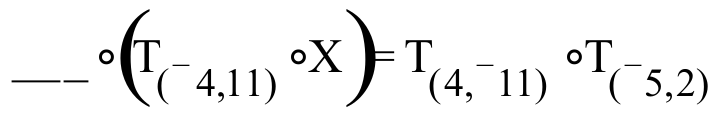
LaTeX candidateLaTeX source
\mathrm{\_\_}\text{\_}\circ \left( \text{T}_{\text{(}{}^{-}\text{4,}1\text{1)}}\circ \text{X} \right)=\text{T}_{\text{(}4\text{,}{}^{-}\text{11)}}\circ \text{T}_{\text{(}{}^{-}\text{5,2)}}image81 · formula · Assignment 64, IV
Source preview · reference page 28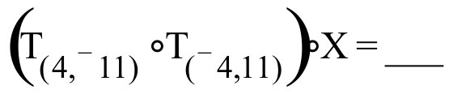
LaTeX candidateLaTeX source
\left( \text{T}_{\text{(}4\text{,}{}^{-}\text{11)}}\circ \text{T}_{\text{(}{}^{-}\text{4,}1\text{1)}} \right)\circ \text{X}=\text{\_\_\_}image82 · formula · Assignment 64, V
Source preview · reference page 28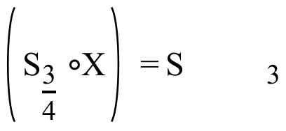
LaTeX candidateLaTeX source
\left( \text{S}_{\frac{3}{4}}\circ \text{X} \right)\text{ }=\hspace{2.5em}\text{S}_{3}image83 · formula · Assignment 64, V
Source preview · reference page 28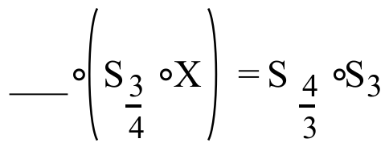
LaTeX candidateLaTeX source
\mathrm{\_\_\_}\circ \left( \text{S}_{\frac{3}{4}}\circ \text{X} \right)\text{ }=\text{ S}_{\frac{4}{3}}\circ \text{S}_{3}image84 · formula · Assignment 64, V
Source preview · reference page 28LaTeX candidateLaTeX source
\left( \text{S}_{\frac{4}{3}}\circ \text{S}_{\frac{3}{4}} \right)\circ \text{X}=\text{\_\_\_}image85 · formula · Assignment 64, VI
Source preview · reference page 28LaTeX candidateLaTeX source
\left( \text{R}_{35}\circ \text{X} \right)\text{ }=\hspace{2.5em}\text{R}_{106}image86 · formula · Assignment 64, VI
Source preview · reference page 29LaTeX candidateLaTeX source
\mathrm{\_\_\_}\circ \left( \text{R}_{35}\circ \text{X} \right)\text{ }=\text{ R}_{{}^{-}35}\circ \text{R}_{106}image87 · formula · Assignment 64, VI
Source preview · reference page 29LaTeX candidateLaTeX source
\left( \text{R}_{{}^{-}35}\circ \text{R}_{35} \right)\circ \text{X}=\text{\_\_\_}image88 · coordinate plot · Assignment 64, VIII
Source preview · reference page 29 Original retainedOriginal retainedContains original raster artwork; retained as an image. Vector conversion is incomplete.
Original retainedOriginal retainedContains original raster artwork; retained as an image. Vector conversion is incomplete.Contains original raster artwork; retained as an image. Vector conversion is incomplete.
Original file · Source PDFimage89 · formula · Assignment 64, IX
Source preview · reference page 29LaTeX candidateLaTeX source
2\cdot x+2\cdot y=80image90 · coordinate plot · Assignment 65, II
Source preview · reference page 31 Drawing recovered as vectors
Drawing recovered as vectors SVG · Drawing JSON · Original file · Source PDF
SVG · Drawing JSON · Original file · Source PDFimage91 · formula · Assignment 65, III
Source preview · reference page 32LaTeX candidateLaTeX source
\text{T}_{\text{(5,}{}^{-}\text{3)}}\circ \text{X}=\hspace{2.5em}\text{T}_{\text{(}{}^{-}\text{2,8)}}image92 · formula · Assignment 65, IV
Source preview · reference page 32LaTeX candidateLaTeX source
\text{S}_{\frac{\text{3}}{\text{4}}}\circ \text{X}=\hspace{1.75em}\text{S}_{{}^{-}2}image93 · formula · Assignment 65, V
Source preview · reference page 32LaTeX candidateLaTeX source
2\times 2image94 · annotated matrix · Assignment 65, V
Source preview · reference page 32 Drawing recovered as vectors
Drawing recovered as vectors SVG · Drawing JSON · Original file · Source PDF
SVG · Drawing JSON · Original file · Source PDFimage95 · formula · Assignment 65, V
Source preview · reference page 32LaTeX candidateLaTeX source
\left[ \begin{matrix}\frac{{}^{-}\sqrt{3}}{2} & \frac{{}^{-}1}{2} \\ \frac{1}{2} & \frac{{}^{-}\sqrt{3}}{2}\end{matrix} \right]\cdot \left[ \begin{matrix}\frac{{}^{-}\sqrt{3}}{2} & \frac{1}{2} \\ \frac{{}^{-}1}{2} & \frac{{}^{-}\sqrt{3}}{2}\end{matrix} \right]=\left[ \begin{matrix}1 & 0 \\ 0 & 1\end{matrix} \right]image96 · annotated matrix · Assignment 65, V
Source preview · reference page 33 Drawing recovered as vectors
Drawing recovered as vectors SVG · Drawing JSON · Original file · Source PDF
SVG · Drawing JSON · Original file · Source PDFimage97 · formula · Assignment 65, V
Source preview · reference page 33LaTeX candidateLaTeX source
\left[ \begin{matrix}5 & 2 \\ 7 & 3\end{matrix} \right]\cdot \left[ \begin{matrix}5 & {}^{-}2 \\ {}^{-}7 & 3\end{matrix} \right]=\left[ \begin{matrix}11 & {}^{-}4 \\ 14 & {}^{-}5\end{matrix} \right]image98 · annotated matrix · Assignment 65, V
Source preview · reference page 33 Drawing recovered as vectors
Drawing recovered as vectors SVG · Drawing JSON · Original file · Source PDF
SVG · Drawing JSON · Original file · Source PDFimage99 · formula · Assignment 65, V
Source preview · reference page 33LaTeX candidateLaTeX source
\left[ \begin{matrix}5 & 2 \\ 7 & 3\end{matrix} \right]\cdot \left[ \begin{matrix}3 & {}^{-}2 \\ {}^{-}7 & 5\end{matrix} \right]=\left[ \begin{matrix}1 & 0 \\ 0 & 1\end{matrix} \right]image100 · formula · Assignment 65, V
Source preview · reference page 34LaTeX candidateLaTeX source
\left[ \begin{matrix}6 & {}^{-}5 \\ 5 & {}^{-}4\end{matrix} \right]image101 · formula · Assignment 65, V
Source preview · reference page 34LaTeX candidateLaTeX source
\left[ \begin{matrix}2 & 8 \\ 3 & 13\end{matrix} \right]image102 · formula · Assignment 65, VI
Source preview · reference page 34LaTeX candidateLaTeX source
\left\{ \begin{array}{l}\hspace{0.75em}18\cdot x+6\cdot y=32 \\ 2\text{1}\cdot x+20\cdot y\text{ }=28\end{array} \right.image103 · formula · Assignment 65, VI
Source preview · reference page 34LaTeX candidateLaTeX source
\text{A}\cdot \left[ \begin{matrix}x \\ y\end{matrix} \right]=\text{C}image104 · formula · Assignment 65, VII
Source preview · reference page 34LaTeX candidateLaTeX source
\left[ \begin{matrix}4 & 2 \\ {}^{-}5 & 1\end{matrix} \right]\cdot \left[ \begin{matrix}{}^{-}3 \\ 4\end{matrix} \right]image105 · formula · Assignment 65, VII
Source preview · reference page 34LaTeX candidateLaTeX source
\left[ \begin{matrix}3 & 4 \\ {}^{-}2 & 6\end{matrix} \right]image106 · formula · Assignment 65, VII
Source preview · reference page 34LaTeX candidateLaTeX source
\left[ \begin{matrix}3 & 4 \\ {}^{-}2 & 6\end{matrix} \right]\cdot \left[ \begin{matrix}4 & 2 \\ {}^{-}5 & 1\end{matrix} \right]image107 · formula · Assignment 65, VII
Source preview · reference page 34LaTeX candidateLaTeX source
\left[ \begin{matrix}{}^{-}3 \\ 4\end{matrix} \right]image108 · formula · Assignment 65, VIII
Source preview · reference page 35LaTeX candidateLaTeX source
\left[ \begin{matrix}18 & 6 \\ 21 & 20\end{matrix} \right]\cdot \left[ \begin{matrix}x \\ y\end{matrix} \right]=\hspace{2.75em}\left[ \begin{matrix}32 \\ 28\end{matrix} \right]image109 · formula · Assignment 65, VIII
Source preview · reference page 35LaTeX candidateLaTeX source
\left[ \begin{matrix}\phantom{0} & \phantom{0} \\ \phantom{0} & \phantom{0}\end{matrix} \right]\cdot \left( \left[ \begin{matrix}18 & 6 \\ 21 & 20\end{matrix} \right]\cdot \left[ \begin{matrix}x \\ y\end{matrix} \right] \right)=\left[ \begin{matrix}\frac{20}{234} & \frac{{}^{-}6}{234} \\ \frac{{}^{-}21}{234} & \frac{18}{234}\end{matrix} \right]\cdot \left[ \begin{matrix}32 \\ 28\end{matrix} \right]image110 · formula · Assignment 65, VIII
Source preview · reference page 35LaTeX candidateLaTeX source
\left( \left[ \begin{matrix}\frac{20}{234} & \frac{{}^{-}6}{234} \\ \frac{{}^{-}21}{234} & \frac{18}{234}\end{matrix} \right]\cdot \left[ \begin{matrix}18 & 6 \\ 21 & 20\end{matrix} \right] \right)\cdot \left[ \begin{matrix}x \\ y\end{matrix} \right]=\left[ \begin{matrix}\phantom{0} & \phantom{0} \\ \phantom{0} & \phantom{0}\end{matrix} \right]image111 · formula · Assignment 65, VIII
Source preview · reference page 35LaTeX candidateLaTeX source
\left[ \begin{matrix}\phantom{0} & \phantom{0} \\ \phantom{0} & \phantom{0}\end{matrix} \right]\cdot \left[ \begin{matrix}x \\ y\end{matrix} \right]=\left[ \begin{matrix}\phantom{0} & \phantom{0} \\ \phantom{0} & \phantom{0}\end{matrix} \right]image112 · formula · Assignment 65, VIII
Source preview · reference page 35LaTeX candidateLaTeX source
\left[ \begin{matrix}x \\ y\end{matrix} \right]=\left[ \begin{matrix}\phantom{0} & \phantom{0} \\ \phantom{0} & \phantom{0}\end{matrix} \right]image113 · formula · Assignment 65, IX
Source preview · reference page 35LaTeX candidateLaTeX source
2\cdot x+4\cdot y=120image114 · coordinate plot · Assignment 66, I
Source preview · reference page 37 Drawing recovered as vectors
Drawing recovered as vectors SVG · Drawing JSON · Original file · Source PDF
SVG · Drawing JSON · Original file · Source PDFimage115 · formula · Assignment 66, III
Source preview · reference page 38LaTeX candidateLaTeX source
\text{T}_{\text{(5,}{}^{-}\text{3)}}\circ \text{X}=\hspace{2.5em}\text{T}_{\text{(}0\text{,0)}}image116 · formula · Assignment 66, IV
Source preview · reference page 38LaTeX candidateLaTeX source
\text{S}_{\frac{\text{7}}{\text{3}}}\circ \text{X}=\hspace{1.75em}\text{S}_{1}image117 · formula · Assignment 66, V
Source preview · reference page 38LaTeX candidateLaTeX source
\left[ \begin{matrix}5 & 4 \\ 2 & 3\end{matrix} \right]\cdot \left[ \begin{matrix}3 & {}^{-}4 \\ {}^{-}2 & 5\end{matrix} \right]image118 · formula · Assignment 66, V
Source preview · reference page 38LaTeX candidateLaTeX source
\left[ \begin{matrix}5 & 4 \\ 2 & 3\end{matrix} \right]image119 · formula · Assignment 66, VI
Source preview · reference page 38LaTeX candidateLaTeX source
\left\{ \begin{array}{l}20\cdot x+19\cdot y=15 \\ \hspace{0.5em}9\cdot x+4\cdot y\text{ }=23\end{array} \right.image120 · formula · Assignment 66, VII
Source preview · reference page 38LaTeX candidateLaTeX source
\left[ \begin{matrix}20 & 19 \\ 9 & 4\end{matrix} \right]\cdot \left[ \begin{matrix}x \\ y\end{matrix} \right]=\hspace{2.75em}\left[ \begin{matrix}15 \\ 23\end{matrix} \right]image121 · formula · Assignment 66, VII
Source preview · reference page 39LaTeX candidateLaTeX source
\left[ \begin{matrix}\phantom{0} & \phantom{0} \\ \phantom{0} & \phantom{0}\end{matrix} \right]\cdot \left( \left[ \begin{matrix}20 & 19 \\ 9 & 4\end{matrix} \right]\cdot \left[ \begin{matrix}x \\ y\end{matrix} \right] \right)=\left[ \begin{matrix}\frac{{}^{-}4}{91} & \frac{19}{91} \\ \frac{9}{91} & \frac{{}^{-}20}{91}\end{matrix} \right]\cdot \left[ \begin{matrix}15 \\ 23\end{matrix} \right]image122 · formula · Assignment 66, VII
Source preview · reference page 39LaTeX candidateLaTeX source
\left( \left[ \begin{matrix}\frac{{}^{-}4}{91} & \frac{19}{91} \\ \frac{9}{91} & \frac{{}^{-}20}{91}\end{matrix} \right]\cdot \left[ \begin{matrix}20 & 19 \\ 9 & 4\end{matrix} \right] \right)\cdot \left[ \begin{matrix}x \\ y\end{matrix} \right]=\left[ \begin{matrix}\phantom{0} & \phantom{0} \\ \phantom{0} & \phantom{0}\end{matrix} \right]image123 · formula · Assignment 66, VIII
Source preview · reference page 40LaTeX candidateLaTeX source
10\cdot \mathrm{\$}3+20\cdot \mathrm{\$}4=\mathrm{\$}110image124 · formula · Assignment 66, VIII
Source preview · reference page 40LaTeX candidateLaTeX source
0\cdot \mathrm{\$}3+25\cdot \mathrm{\$}4=\mathrm{\$}100image125 · formula · Assignment 66, VIII
Source preview · reference page 40LaTeX candidateLaTeX source
100\cdot \mathrm{\$}3+0\cdot \mathrm{\$}4=\mathrm{\$}300image126 · formula · Assignment 66, IX
Source preview · reference page 41LaTeX candidateLaTeX source
8\cdot x+19\cdot y=70image127 · formula · Assignment 66, IX
Source preview · reference page 41LaTeX candidateLaTeX source
y=\text{a}\cdot x+\text{b}image128 · formula · Assignment 66, IX
Source preview · reference page 41LaTeX candidateLaTeX source
20\cdot x+6\cdot y=100image129 · formula · Assignment 66, IX
Source preview · reference page 41LaTeX candidateLaTeX source
\left\{ \begin{array}{l}8\cdot x+19\cdot y\leq 70 \\ 20\cdot x+6\cdot y\leq 100\end{array} \right.image130 · coordinate plot · Assignment 67, I
Source preview · reference page 42 Drawing recovered as vectors
Drawing recovered as vectors SVG · Drawing JSON · Original file · Source PDF
SVG · Drawing JSON · Original file · Source PDFimage131 · formula · Assignment 67, II
Source preview · reference page 43LaTeX candidateLaTeX source
\left[ \begin{matrix}3 & {}^{-}4 \\ {}^{-}2 & 5\end{matrix} \right]image132 · formula · Assignment 67, II
Source preview · reference page 43LaTeX candidateLaTeX source
\left[ \begin{matrix}5 & 4 \\ 2 & 3\end{matrix} \right]\cdot \left[ \begin{matrix}3 & {}^{-}4 \\ {}^{-}2 & 5\end{matrix} \right]=\left[ \begin{matrix}7 & 0 \\ 0 & 7\end{matrix} \right]image133 · formula · Assignment 67, II
Source preview · reference page 43LaTeX candidateLaTeX source
\frac{1}{7}image134 · formula · Assignment 67, II
Source preview · reference page 43LaTeX candidateLaTeX source
\left[ \begin{matrix}5 & 4 \\ 2 & 3\end{matrix} \right]\cdot \left[ \begin{matrix}\frac{3}{7} & \frac{{}^{-}4}{7} \\ \frac{{}^{-}2}{7} & \frac{5}{7}\end{matrix} \right]=\left[ \begin{matrix}5\cdot \frac{3}{7}+4\cdot \frac{{}^{-}2}{7} & 5\cdot \frac{{}^{-}4}{7}+4\cdot \frac{5}{7} \\ 2\cdot \frac{3}{7}+3\cdot \frac{{}^{-}2}{7} & 2\cdot \frac{{}^{-}4}{7}+3\cdot \frac{5}{7}\end{matrix} \right]=\left[ \begin{matrix}1 & 0 \\ 0 & 1\end{matrix} \right]image135 · formula · Assignment 67, II
Source preview · reference page 43LaTeX candidateLaTeX source
\left[ \begin{matrix}\text{d} & {}^{-}\text{b} \\ {}^{-}\text{c} & \text{a}\end{matrix} \right]image136 · formula · Assignment 67, II
Source preview · reference page 43LaTeX candidateLaTeX source
\text{a}\cdot \text{d}+\text{b}\cdot {}^{-}\text{c}image137 · formula · Assignment 67, II
Source preview · reference page 43LaTeX candidateLaTeX source
\left[ \begin{matrix}\text{a} & \text{b} \\ \text{c} & \text{d}\end{matrix} \right]\cdot \left[ \begin{matrix}\text{d} & {}^{-}\text{b} \\ {}^{-}\text{c} & \text{a}\end{matrix} \right]image138 · formula · Assignment 67, II
Source preview · reference page 43LaTeX candidateLaTeX source
\left[ \begin{matrix}\text{a}\cdot \text{d}+\text{b}\cdot ^{-}\text{c} & \text{0} \\ \text{0} & {}^{-}\text{b}\cdot \text{c}+\text{a}\cdot \text{d}\end{matrix} \right]image139 · formula · Assignment 67, II
Source preview · reference page 43LaTeX candidateLaTeX source
\frac{\text{1}}{\text{a}\cdot \text{d}+\text{b}\cdot {}^{-}\text{c}}image140 · formula · Assignment 67, II
Source preview · reference page 43LaTeX candidateLaTeX source
\left[ \begin{matrix}\frac{\text{d}}{\text{a}\cdot \text{d}+\text{b }\cdot {}^{-}\text{c}} & \frac{{}^{-}\text{b}}{\text{a}\cdot \text{d}+\text{b }\cdot {}^{-}\text{c}} \\ \frac{{}^{-}\text{c}}{\text{a}\cdot \text{d}+\text{b }\cdot {}^{-}\text{c}} & \frac{\text{a}}{\text{a}\cdot \text{d}+\text{b }\cdot {}^{-}\text{c}}\end{matrix} \right]image141 · formula · Assignment 67, II
Source preview · reference page 44LaTeX candidateLaTeX source
\text{a}\cdot \text{d}-\text{b}\cdot \text{c}image142 · formula · Assignment 67, II
Source preview · reference page 44 LaTeX candidate
LaTeX candidateLaTeX source
\neq image143 · formula · Assignment 67, II
Source preview · reference page 44LaTeX candidateLaTeX source
\left[ \begin{matrix}\frac{\text{d}}{\text{a}\cdot \text{d}-\text{b}\cdot \text{c}} & \frac{{}^{-}\text{b}}{\text{a}\cdot \text{d}-\text{b}\cdot \text{c}} \\ \frac{{}^{-}\text{c}}{\text{a}\cdot \text{d}-\text{b}\cdot \text{c}} & \frac{\text{a}}{\text{a}\cdot \text{d}-\text{b}\cdot \text{c}}\end{matrix} \right]image144 · formula · Assignment 67, II
Source preview · reference page 44LaTeX candidateLaTeX source
\left[ \begin{matrix}6 & 4 \\ 4 & 3\end{matrix} \right]image145 · formula · Assignment 67, II
Source preview · reference page 44LaTeX candidateLaTeX source
\left[ \begin{matrix}6 & 4 \\ 4 & 3\end{matrix} \right]\cdot \left[ \begin{matrix}x \\ y\end{matrix} \right]=\hspace{2.75em}\left[ \begin{matrix}17 \\ 23\end{matrix} \right]image146 · formula · Assignment 67, II
Source preview · reference page 44LaTeX candidateLaTeX source
\left\{ \begin{array}{l}6\cdot x+4\cdot y=17 \\ 4\cdot x+3\cdot y=23\end{array} \right.image147 · formula · Assignment 67, IV
Source preview · reference page 45LaTeX candidateLaTeX source
\left\{ \begin{array}{l}5\cdot x+8\cdot y=80 \\ 10\cdot x+4\cdot y=100\end{array} \right.image148 · formula · Assignment 67, IV
Source preview · reference page 45LaTeX candidateLaTeX source
\text{A}\cdot \left[ \begin{matrix}x \\ y\end{matrix} \right]=\text{C}image149 · coordinate plot · Assignment 67, VI
Source preview · reference page 46 Original retainedOriginal retainedContains original raster artwork; retained as an image. Vector conversion is incomplete.
Original retainedOriginal retainedContains original raster artwork; retained as an image. Vector conversion is incomplete.Contains original raster artwork; retained as an image. Vector conversion is incomplete.
Original file · Source PDFimage150 · formula · Assignment 67, VII
Source preview · reference page 46LaTeX candidateLaTeX source
\left\{\begin{array}{l}5\cdot x+8\cdot y\geq80\quad A \\ 10\cdot x+4\cdot y\geq100\quad B\end{array}\right.image151 · formula · Assignment 68, I
Source preview · reference page 47LaTeX candidateLaTeX source
\left[ \begin{matrix}7 & 2 \\ 5 & 3\end{matrix} \right]image152 · formula · Assignment 68, I
Source preview · reference page 47LaTeX candidateLaTeX source
\left[ \begin{matrix}5 & 3 \\ 7 & 2\end{matrix} \right]image153 · formula · Assignment 68, I
Source preview · reference page 47LaTeX candidateLaTeX source
\left[ \begin{matrix}20 & 14 \\ 12 & 4\end{matrix} \right]image154 · formula · Assignment 68, II
Source preview · reference page 47LaTeX candidateLaTeX source
\left\{ \begin{array}{l}\text{a}\cdot x+\text{b}\cdot y=\text{e} \\ \text{c}\cdot x+\text{d}\cdot y=\text{f}\end{array} \right.image155 · formula · Assignment 68, II
Source preview · reference page 47LaTeX candidateLaTeX source
\left[ \begin{matrix}\text{a} & \text{b} \\ \text{c} & \text{d}\end{matrix} \right]\cdot \left[ \begin{matrix}x \\ y\end{matrix} \right]=\hspace{0.75em}\left[ \begin{matrix}\text{e} \\ \text{f}\end{matrix} \right]image156 · formula · Assignment 68, II
Source preview · reference page 47LaTeX candidateLaTeX source
\left[ \begin{matrix}\text{e} \\ \text{f}\end{matrix} \right]image157 · formula · Assignment 68, II
Source preview · reference page 47LaTeX candidateLaTeX source
\left[ \begin{matrix}\text{a} & \text{b} \\ \text{c} & \text{d}\end{matrix} \right]\cdot \left[ \begin{matrix}x \\ y\end{matrix} \right]=\hspace{0.75em}\left[ \begin{matrix}\text{c} \\ \text{f}\end{matrix} \right]image158 · formula · Assignment 68, II
Source preview · reference page 47 LaTeX candidate
LaTeX candidateLaTeX source
\left[ \text{A} \right]^{{}^{-}1}\ast \left[ \text{C} \right]image159 · formula · Assignment 68, II
Source preview · reference page 48LaTeX candidateLaTeX source
^{{}^{-}1}image160 · formula · Assignment 68, II
Source preview · reference page 48LaTeX candidateLaTeX source
\text{A}\cdot \left[ \begin{matrix}x \\ y\end{matrix} \right]=\hspace{2.0em}\text{C}image161 · formula · Assignment 68, II
Source preview · reference page 48LaTeX candidateLaTeX source
\left\{ \begin{array}{l}20\cdot x+14\cdot y=57 \\ 12\cdot x+4\cdot y=30\end{array} \right.image162 · coordinate plot · Assignment 68, III
Source preview · reference page 48 Drawing recovered as vectors
Drawing recovered as vectors SVG · Drawing JSON · Original file · Source PDF
SVG · Drawing JSON · Original file · Source PDFimage163 · formula · Assignment 68, IV
Source preview · reference page 49LaTeX candidateLaTeX source
2\cdot x+2\cdot y\leq 80image164 · coordinate plot · Assignment 68, V
Source preview · reference page 49 Original retainedOriginal retainedContains original raster artwork; retained as an image. Vector conversion is incomplete.
Original retainedOriginal retainedContains original raster artwork; retained as an image. Vector conversion is incomplete.Contains original raster artwork; retained as an image. Vector conversion is incomplete.
Original file · Source PDFimage165 · formula · Assignment 68, V
Source preview · reference page 49LaTeX candidateLaTeX source
3\cdot x+4\cdot yimage166 · formula · Assignment 68, VI
Source preview · reference page 50LaTeX candidateLaTeX source
\left\{ \begin{array}{l}5\cdot x+11\cdot y\leq 110 \\ 8\cdot x+4\cdot y\leq 72 \\ x\geq 0 \\ y\geq 0\end{array} \right.image167 · formula · Assignment 68, VII
Source preview · reference page 50LaTeX candidateLaTeX source
y=\frac{{}^{-}7}{9}\cdot ximage168 · formula · Assignment 68, VII
Source preview · reference page 50LaTeX candidateLaTeX source
y=\frac{{}^{-}7}{9}\cdot x+\frac{66}{27}image169 · formula · Assignment 68, VII
Source preview · reference page 50LaTeX candidateLaTeX source
43=5\cdot x+3\cdot yimage170 · formula · Assignment 68, VII
Source preview · reference page 50LaTeX candidateLaTeX source
\text{P}=5\cdot x+3\cdot yimage171 · coordinate plot · Assignment 68, VIII
Source preview · reference page 50 Drawing recovered as vectors
Drawing recovered as vectors SVG · Drawing JSON · Original file · Source PDF
SVG · Drawing JSON · Original file · Source PDFimage172 · coordinate plot · Assignment 69, I
Source preview · reference page 51 Drawing recovered as vectors
Drawing recovered as vectors SVG · Drawing JSON · Original file · Source PDF
SVG · Drawing JSON · Original file · Source PDFimage173 · formula · Assignment 69, II
Source preview · reference page 52LaTeX candidateLaTeX source
2\cdot x+4\cdot y\leq 120image174 · formula · Assignment 69, II
Source preview · reference page 52LaTeX candidateLaTeX source
\left\{ \begin{array}{l}2\cdot x+2\cdot y\leq 80 \\ 2\cdot x+4\cdot y\leq 120\end{array} \right.image175 · formula · Assignment 69, II
Source preview · reference page 52LaTeX candidateLaTeX source
x+0\cdot y\geq 0image176 · formula · Assignment 69, II
Source preview · reference page 52LaTeX candidateLaTeX source
0\cdot x+y\geq 0image177 · formula · Assignment 69, II
Source preview · reference page 52LaTeX candidateLaTeX source
x\geq 0image178 · formula · Assignment 69, II
Source preview · reference page 52LaTeX candidateLaTeX source
y\geq 0image179 · coordinate plot · Assignment 69, II
Source preview · reference page 53 Original retainedOriginal retainedContains original raster artwork; retained as an image. Vector conversion is incomplete.
Original retainedOriginal retainedContains original raster artwork; retained as an image. Vector conversion is incomplete.Contains original raster artwork; retained as an image. Vector conversion is incomplete.
Original file · Source PDFimage180 · formula · Assignment 69, IV
Source preview · reference page 54LaTeX candidateLaTeX source
\left\{ \begin{array}{l}4\cdot x+1\cdot y\leq 10 \\ 18\cdot x+15\cdot y\leq 66 \\ x\geq 0 \\ y\geq 0\end{array} \right.image181 · formula · Assignment 69, V
Source preview · reference page 54LaTeX candidateLaTeX source
\left[ \begin{matrix}2 & 0 \\ 0 & 2\end{matrix} \right]image182 · formula · Assignment 69, V
Source preview · reference page 54LaTeX candidateLaTeX source
\left[ \begin{matrix}\mathrm{cos(}23^{\text{o}}\mathrm{)} & {}^{-}\mathrm{sin(}23^{\text{o}}\mathrm{)} \\ \mathrm{sin(}23^{\text{o}}\mathrm{)} & \mathrm{cos(}23^{\text{o}}\mathrm{)}\end{matrix} \right]image183 · formula · Assignment 69, V
Source preview · reference page 54LaTeX candidateLaTeX source
\left[ \begin{matrix}7 & 11 \\ 2 & 7\end{matrix} \right]image184 · formula · Assignment 69, VI
Source preview · reference page 54LaTeX candidateLaTeX source
\left\{ \begin{array}{l}7\cdot x+11\cdot y=80 \\ 2\cdot x+7\cdot y=130\end{array} \right.image185 · formula · Assignment 69, VII
Source preview · reference page 54LaTeX candidateLaTeX source
34=6\cdot x+11\cdot yimage186 · formula · Assignment 69, VII
Source preview · reference page 54LaTeX candidateLaTeX source
52=7\cdot x+8\cdot yimage187 · coordinate plot · Assignment 69, VIII
Source preview · reference page 55 Drawing recovered as vectors
Drawing recovered as vectors SVG · Drawing JSON · Original file · Source PDF
SVG · Drawing JSON · Original file · Source PDFimage188 · formula · Assignment 70, I
Source preview · reference page 56LaTeX candidateLaTeX source
\left\{ \begin{array}{l}2\cdot x+2\cdot y\leq 80 \\ 2\cdot x+4\cdot y\leq 120 \\ x\geq 0 \\ y\geq 0\end{array} \right.image189 · coordinate plot · Assignment 70, I
Source preview · reference page 56 Original retainedOriginal retainedContains original raster artwork; retained as an image. Vector conversion is incomplete.
Original retainedOriginal retainedContains original raster artwork; retained as an image. Vector conversion is incomplete.Contains original raster artwork; retained as an image. Vector conversion is incomplete.
Original file · Source PDFimage190 · formula · Assignment 70, II
Source preview · reference page 58LaTeX candidateLaTeX source
2\cdot x+5\cdot yimage191 · formula · Assignment 70, II
Source preview · reference page 58LaTeX candidateLaTeX source
5\cdot x+4\cdot yimage192 · formula · Assignment 70, III
Source preview · reference page 58LaTeX candidateLaTeX source
y=\frac{{}^{-}3}{4}\cdot x+\frac{120}{4}image193 · formula · Assignment 70, VI
Source preview · reference page 59LaTeX candidateLaTeX source
\left\{ \begin{array}{l}11\cdot x+31\cdot y=100 \\ 17\cdot x+{}^{-}8\cdot y={}^{-}84\end{array} \right.image194 · coordinate plot · Assignment 70, VII
Source preview · reference page 59 Drawing recovered as vectors
Drawing recovered as vectors SVG · Drawing JSON · Original file · Source PDF
SVG · Drawing JSON · Original file · Source PDFimage195 · coordinate plot · Assignment 70, VIII
Source preview · reference page 60 Drawing recovered as vectors
Drawing recovered as vectors SVG · Drawing JSON · Original file · Source PDF
SVG · Drawing JSON · Original file · Source PDFimage196 · coordinate plot · Assignment 71, I
Source preview · reference page 61 Original retainedOriginal retainedSome ordinary letters in this legacy preview render as Symbol glyphs. The original PICT is preserved; its labels need correction before publication.
Original retainedOriginal retainedSome ordinary letters in this legacy preview render as Symbol glyphs. The original PICT is preserved; its labels need correction before publication.Contains original raster artwork; retained as an image. Vector conversion is incomplete.
Some ordinary letters in this legacy preview render as Symbol glyphs. The original PICT is preserved; its labels need correction before publication.
Original file · Source PDFimage197 · formula · Assignment 71, I
Source preview · reference page 61LaTeX candidateLaTeX source
y=\frac{{}^{-}3}{4}\cdot x+\frac{\text{P}}{4}image198 · coordinate plot · Assignment 71, I
Source preview · reference page 62 Original retainedOriginal retainedContains original raster artwork; retained as an image. Vector conversion is incomplete.
Original retainedOriginal retainedContains original raster artwork; retained as an image. Vector conversion is incomplete.Contains original raster artwork; retained as an image. Vector conversion is incomplete.
Original file · Source PDFimage199 · formula · Assignment 71, III
Source preview · reference page 64 LaTeX candidate
LaTeX candidateLaTeX source
\frac{1}{2}image200 · coordinate plot · Assignment 71, IV
Source preview · reference page 65 Drawing recovered as vectors
Drawing recovered as vectors SVG · Drawing JSON · Original file · Source PDF
SVG · Drawing JSON · Original file · Source PDFimage201 · geometry · Assignment 71, VI
Source preview · reference page 66 Drawing recovered as vectors
Drawing recovered as vectors SVG · Drawing JSON · Original file · Source PDF
SVG · Drawing JSON · Original file · Source PDFimage202 · formula · Assignment 71, VII
Source preview · reference page 66LaTeX candidateLaTeX source
\begin{array}{l}\frac{\text{1}}{\text{2}}\cdot \text{(c}+{}^{-}\text{a)}+\text{a}=\frac{\text{1}}{\text{2}}\cdot \text{c}+\left( \right)\cdot \text{a}+\text{a}=\frac{\text{1}}{\text{2}}\cdot \text{c}+{}^{-}\frac{\text{1}}{\text{2}}\cdot \text{a}+\frac{\text{2}}{\text{2}}\cdot \text{a} \\ =\frac{\text{1}}{\text{2}}\cdot \text{c}+\left( \frac{{}^{-}\text{1}}{\text{2}}+\left( \right) \right)\cdot \text{a}=\frac{\text{1}}{\text{2}}\cdot \text{c}+\left( \right)\cdot \text{a}=\left( \right)\cdot \text{(a}+\text{c)}\end{array}image203 · reflection translation · Assignment 72, III
Source preview · reference page 68 Drawing recovered as vectors
Drawing recovered as vectors SVG · Drawing JSON · Original file · Source PDF
SVG · Drawing JSON · Original file · Source PDFimage204 · formula · Assignment 72, III
Source preview · reference page 68LaTeX candidateLaTeX source
\frac{\text{1}}{\text{2}}\cdot \text{(c}+{}^{-}\text{a)}+\text{a}=\frac{\text{1}}{\text{2}}\cdot \text{c}+{}^{-}\frac{\text{1}}{\text{2}}\cdot \text{a}+\text{a}=\frac{\text{1}}{\text{2}}\cdot \text{c}+{}^{-}\frac{\text{1}}{\text{2}}\cdot \text{a}+\frac{\text{2}}{\text{2}}\cdot \text{a}=\frac{\text{1}}{\text{2}}\cdot \text{c}+\left( \frac{{}^{-}\text{1}}{\text{2}}+\frac{\text{2}}{\text{2}} \right)\cdot \text{a}=\frac{\text{1}}{\text{2}}\cdot \text{c}+\frac{\text{1}}{\text{2}}\cdot \text{a}=\frac{\text{1}}{\text{2}}\cdot \text{(a}+\text{c)}image205 · formula · Assignment 72, III
Source preview · reference page 68LaTeX candidateLaTeX source
\frac{\text{1}}{\text{2}}\cdot \text{(d}+{}^{-}\text{b)}+\text{b}=\frac{\text{1}}{\text{2}}\cdot \text{d}+{}^{-}\frac{\text{1}}{\text{2}}\cdot \text{b}+\text{b}=\frac{\text{1}}{\text{2}}\cdot \text{d}+{}^{-}\frac{\text{1}}{\text{2}}\cdot \text{b}+\frac{\text{2}}{\text{2}}\cdot \text{b}=\frac{\text{1}}{\text{2}}\cdot \text{d}+\left( \frac{{}^{-}\text{1}}{\text{2}}+\frac{\text{2}}{\text{2}} \right)\cdot \text{b}=\frac{\text{1}}{\text{2}}\cdot \text{d}+\frac{\text{1}}{\text{2}}\cdot \text{b}=\frac{\text{1}}{\text{2}}\cdot \text{(d}+\text{b)}image206 · formula · Assignment 72, III
Source preview · reference page 69LaTeX candidateLaTeX source
\left( \frac{\text{1}}{\text{2}}\cdot \text{(a}+\text{c),}\frac{\text{1}}{\text{2}}\text{(b}+\text{d)} \right)image207 · coordinate plot · Assignment 72, III
Source preview · reference page 69 Drawing recovered as vectors
Drawing recovered as vectors SVG · Drawing JSON · Original file · Source PDF
SVG · Drawing JSON · Original file · Source PDFimage208 · coordinate plot · Assignment 72, VI
Source preview · reference page 70 Drawing recovered as vectors
Drawing recovered as vectors SVG · Drawing JSON · Original file · Source PDF
SVG · Drawing JSON · Original file · Source PDFimage209 · shapes symmetry · Assignment 72, VII
Source preview · reference page 70 Drawing recovered as vectors
Drawing recovered as vectors SVG · Drawing JSON · Original file · Source PDF
SVG · Drawing JSON · Original file · Source PDFimage210 · coordinate plot · Assignment 73, II
Source preview · reference page 71 Drawing recovered as vectors
Drawing recovered as vectors SVG · Drawing JSON · Original file · Source PDF
SVG · Drawing JSON · Original file · Source PDFimage211 · coordinate plot · Assignment 73, III
Source preview · reference page 72 Drawing recovered as vectors
Drawing recovered as vectors SVG · Drawing JSON · Original file · Source PDF
SVG · Drawing JSON · Original file · Source PDFimage212 · formula · Assignment 73, III
Source preview · reference page 73LaTeX candidateLaTeX source
^{\text{o}}image213 · formula · Assignment 73, IV
Source preview · reference page 73LaTeX candidateLaTeX source
\left\{ \begin{array}{l}y=500 \\ x+y=700\end{array} \right.image214 · formula · Assignment 73, IV
Source preview · reference page 73LaTeX candidateLaTeX source
\left\{ \begin{array}{l}x=400 \\ x+y=800\end{array} \right.image215 · formula · Assignment 73, IV
Source preview · reference page 73LaTeX candidateLaTeX source
\left\{ \begin{array}{l}y=100 \\ x-y=700\end{array} \right.image216 · formula · Assignment 73, V
Source preview · reference page 73LaTeX candidateLaTeX source
\left\{ \begin{array}{l}y\leq 1200 \\ x\leq 1000 \\ x+y\leq 1500 \\ y\geq \frac{1}{4}\cdot x \\ x\geq 0 \\ y\geq 0\end{array} \right.image217 · formula · Assignment 73, VI
Source preview · reference page 73LaTeX candidateLaTeX source
{}^{-}10\leq x-y\leq 10image218 · geometry · Assignment 73, VII
Source preview · reference page 74 Original retainedOriginal retainedContains original raster artwork; retained as an image. Vector conversion is incomplete.
Original retainedOriginal retainedContains original raster artwork; retained as an image. Vector conversion is incomplete.Contains original raster artwork; retained as an image. Vector conversion is incomplete.
Original file · Source PDFimage219 · shapes symmetry · Assignment 73, VIII
Source preview · reference page 74 Drawing recovered as vectors
Drawing recovered as vectors SVG · Drawing JSON · Original file · Source PDF
SVG · Drawing JSON · Original file · Source PDFimage220 · formula · Assignment 73, VIII
Source preview · reference page 74LaTeX candidateLaTeX source
\pi \cdot 7^{2}image221 · formula · Assignment 73, VIII
Source preview · reference page 74LaTeX candidateLaTeX source
18^{2}image222 · formula · Assignment 73, VIII
Source preview · reference page 74LaTeX candidateLaTeX source
\frac{\pi \cdot 7^{2}}{18^{2}}\approx 0\mathrm{.}475image223 · geometry · Assignment 73, VIII
Source preview · reference page 75 Original retainedOriginal retainedContains original raster artwork; retained as an image. Vector conversion is incomplete.
Original retainedOriginal retainedContains original raster artwork; retained as an image. Vector conversion is incomplete.Contains original raster artwork; retained as an image. Vector conversion is incomplete.
Original file · Source PDFimage224 · shapes symmetry · Assignment 73, IX
Source preview · reference page 75 Drawing recovered as vectors
Drawing recovered as vectors SVG · Drawing JSON · Original file · Source PDF
SVG · Drawing JSON · Original file · Source PDFimage225 · geometry · Assignment 74, I
Source preview · reference page 76 Drawing recovered as vectors
Drawing recovered as vectors SVG · Drawing JSON · Original file · Source PDF
SVG · Drawing JSON · Original file · Source PDFimage226 · coordinate plot · Assignment 74, I
Source preview · reference page 76 Drawing recovered as vectors
Drawing recovered as vectors SVG · Drawing JSON · Original file · Source PDF
SVG · Drawing JSON · Original file · Source PDFimage227 · formula · Assignment 74, III
Source preview · reference page 78LaTeX candidateLaTeX source
\left\{ \begin{array}{l}0\leq x\leq 50 \\ 0\leq y\leq 50 \\ \end{array} \right.image228 · coordinate plot · Assignment 74, III
Source preview · reference page 78 Drawing recovered as vectors
Drawing recovered as vectors SVG · Drawing JSON · Original file · Source PDF
SVG · Drawing JSON · Original file · Source PDFimage229 · geometry · Assignment 74, IV
Source preview · reference page 79 Drawing recovered as vectors
Drawing recovered as vectors SVG · Drawing JSON · Original file · Source PDF
SVG · Drawing JSON · Original file · Source PDFimage230 · formula · Assignment 74, VI
Source preview · reference page 79LaTeX candidateLaTeX source
S_{{}^{-}3}\circ S_{4}image231 · coordinate plot · Assignment 74, VII
Source preview · reference page 79 Drawing recovered as vectors
Drawing recovered as vectors SVG · Drawing JSON · Original file · Source PDF
SVG · Drawing JSON · Original file · Source PDFimage232 · coordinate plot · Assignment 74, VIII
Source preview · reference page 80 Drawing recovered as vectors
Drawing recovered as vectors
Some formula labels are small in the legacy preview and need layout review. Available native equations are exposed separately.
SVG · Drawing JSON · Structured data · Original file · Source PDFimage233 · formula · Assignment 74, IX
Source preview · reference page 80LaTeX candidateLaTeX source
\left\{ \begin{array}{l}x+y=1200 \\ y=700\end{array} \right.image234 · formula · Assignment 74, IX
Source preview · reference page 80LaTeX candidateLaTeX source
\left\{ \begin{array}{l}x+y=1600 \\ x=1000\end{array} \right.image235 · formula · Assignment 74, IX
Source preview · reference page 80LaTeX candidateLaTeX source
\left\{ \begin{array}{l}x-y\text{ }={}^{-}15 \\ y=60\end{array} \right.image236 · illustration · Assignment 75,
Source preview · reference page 81 Drawing recovered as vectors
Drawing recovered as vectors SVG · Drawing JSON · Original file · Source PDF
SVG · Drawing JSON · Original file · Source PDFimage237 · coordinate plot · Assignment 75,
Source preview · reference page 82 Original retainedOriginal retainedContains original raster artwork; retained as an image. Vector conversion is incomplete.
Original retainedOriginal retainedContains original raster artwork; retained as an image. Vector conversion is incomplete.Contains original raster artwork; retained as an image. Vector conversion is incomplete.
Original file · Source PDFimage238 · coordinate plot · Assignment 75, I
Source preview · reference page 82 Drawing recovered as vectors
Drawing recovered as vectors SVG · Drawing JSON · Original file · Source PDF
SVG · Drawing JSON · Original file · Source PDFimage239 · coordinate plot · Assignment 75, IV
Source preview · reference page 84 Original retainedOriginal retainedContains original raster artwork; retained as an image. Vector conversion is incomplete.
Original retainedOriginal retainedContains original raster artwork; retained as an image. Vector conversion is incomplete.Contains original raster artwork; retained as an image. Vector conversion is incomplete.
Original file · Source PDFimage240 · geometry · Assignment 75, V
Source preview · reference page 84 Drawing recovered as vectors
Drawing recovered as vectors
Some formula labels are small in the legacy preview and need layout review. Available native equations are exposed separately.
SVG · Drawing JSON · Structured data · Original file · Source PDFimage241 · coordinate plot · Assignment 75, V
Source preview · reference page 85 Drawing recovered as vectors
Drawing recovered as vectors
Some formula labels are small in the legacy preview and need layout review. Available native equations are exposed separately.
SVG · Drawing JSON · Structured data · Original file · Source PDFimage242 · formula · Assignment 75, VI
Source preview · reference page 85LaTeX candidateLaTeX source
\left\{ \begin{array}{l}x+y=1000 \\ y=1200\end{array} \right.image243 · formula · Assignment 75, VI
Source preview · reference page 85LaTeX candidateLaTeX source
\left\{ \begin{array}{l}x+y=1500 \\ x=850\end{array} \right.image244 · formula · Assignment 75, VI
Source preview · reference page 85LaTeX candidateLaTeX source
\left\{ \begin{array}{l}x-y=15 \\ y=60\end{array} \right.image245 · formula · Assignment 75, VIII
Source preview · reference page 85LaTeX candidateLaTeX source
S_{5}\circ S_{{}^{-}2}image246 · geometry · Assignment 76, I
Source preview · reference page 86 Drawing recovered as vectors
Drawing recovered as vectors SVG · Drawing JSON · Original file · Source PDF
SVG · Drawing JSON · Original file · Source PDFimage247 · coordinate plot · Assignment 76, I
Source preview · reference page 86 Drawing recovered as vectors
Drawing recovered as vectors SVG · Drawing JSON · Original file · Source PDF
SVG · Drawing JSON · Original file · Source PDFimage248 · formula · Assignment 76, III
Source preview · reference page 87LaTeX candidateLaTeX source
\begin{array}{l}(3\cdot x+5)(4\cdot x+{}^{-}3)=3\cdot x(4\cdot x+{}^{-}3)+5\cdot\underline{\qquad}= \\ 3\cdot x\cdot\underline{\quad}+3\cdot x\cdot{}^{-}3+5\cdot4\cdot x+5\cdot\underline{\quad}= \\ 12\cdot\underline{\quad}+\underline{\quad}\cdot x+20\cdot\underline{\quad}+\underline{\quad}= \\ \underline{\quad}\cdot x^2+(\underline{\quad}+\underline{\quad})\cdot x+\underline{\quad}= \\ \underline{\qquad}+\underline{\qquad}+\underline{\qquad}\end{array}image249 · formula · Assignment 76, IV
Source preview · reference page 87LaTeX candidateLaTeX source
\frac{1}{4}image250 · formula · Assignment 76, V
Source preview · reference page 87LaTeX candidateLaTeX source
1+a^{2}+\frac{{}^{-}1}{2}\cdot a+\frac{1}{16}=a^{2}+\frac{1}{2}\cdot a+\frac{1}{16}image251 · formula · Assignment 76, VI
Source preview · reference page 88LaTeX candidateLaTeX source
y=2\cdot ximage252 · formula · Assignment 76, VI
Source preview · reference page 88LaTeX candidateLaTeX source
\mathrm{(}5+3\mathrm{,}10+{}^{-}2\mathrm{)}image253 · formula · Assignment 76, VI
Source preview · reference page 88LaTeX candidateLaTeX source
\left( y+2 \right)=2\cdot \left( x+{}^{-}3 \right)image254 · formula · Assignment 76, VI
Source preview · reference page 88LaTeX candidateLaTeX source
\text{T}\mathrm{(}x\mathrm{,}y\mathrm{)}=\mathrm{(}x+3\mathrm{,}y+{}^{-}2\mathrm{)}image255 · formula · Assignment 76, VI
Source preview · reference page 88 LaTeX candidate
LaTeX candidateLaTeX source
y=x^{2}image256 · formula · Assignment 76, VI
Source preview · reference page 88LaTeX candidateLaTeX source
\mathrm{(}3\cdot 4\mathrm{,}5\cdot 16\mathrm{)}image257 · formula · Assignment 76, VI
Source preview · reference page 88LaTeX candidateLaTeX source
\left( \frac{1}{5}\cdot y \right)=\left( \frac{1}{3}\cdot x \right)^{2}image258 · formula · Assignment 76, VI
Source preview · reference page 88LaTeX candidateLaTeX source
\text{S}\mathrm{(}x\mathrm{,}y\mathrm{)}=\mathrm{(}3\cdot x\mathrm{,}5\cdot y\mathrm{)}image259 · formula · Assignment 76, VI
Source preview · reference page 88 LaTeX candidate
LaTeX candidateLaTeX source
y=x^{2}image260 · formula · Assignment 76, VI
Source preview · reference page 88LaTeX candidateLaTeX source
\left( \frac{1}{2}\cdot y \right)=\left( \frac{1}{3}\cdot x \right)^{2}image261 · formula · Assignment 76, VII
Source preview · reference page 88LaTeX candidateLaTeX source
\text{T}_{\text{(}{}^{-}\text{7,2)}}\circ \text{T}_{\text{(9,5)}}image262 · formula · Assignment 76, VII
Source preview · reference page 88LaTeX candidateLaTeX source
S_{\sqrt{2}}\circ S_{\sqrt{8}}image263 · formula · Assignment 76, VII
Source preview · reference page 88LaTeX candidateLaTeX source
\text{R}_{{}^{-}\text{31}}\circ \text{R}_{\text{52}}image264 · formula · Assignment 77, II
Source preview · reference page 89LaTeX candidateLaTeX source
S_{2}\circ S_{{}^{-}5}image265 · formula · Assignment 77, V
Source preview · reference page 89LaTeX candidateLaTeX source
9+a^{2}+\frac{{}^{-}1}{2}\cdot a+\frac{1}{16}=a^{2}+\frac{1}{2}\cdot a+\frac{1}{16}image266 · formula · Assignment 77, VI
Source preview · reference page 89LaTeX candidateLaTeX source
\text{(a}+\text{b)}\cdot \text{(c}+\text{d)}image267 · calculation flow · Assignment 77, VI
Source preview · reference page 90 Drawing recovered as vectors
Drawing recovered as vectors SVG · Drawing JSON · Original file · Source PDF
SVG · Drawing JSON · Original file · Source PDFimage268 · formula · Assignment 77, VI
Source preview · reference page 90LaTeX candidateLaTeX source
\text{(a}+{}^{-}\left( \frac{\text{1}}{\text{2}} \right)\text{)}\cdot \text{(a}+{}^{-}\left( \frac{\text{1}}{\text{2}} \right)\text{)}=\text{a}\cdot \text{a}+\text{a}\cdot {}^{-}\left( \frac{\text{1}}{\text{2}} \right)+{}^{-}\left( \frac{\text{1}}{\text{2}} \right)\cdot \text{a}+{}^{-}\left( \frac{\text{1}}{\text{2}} \right)\cdot {}^{-}\left( \frac{\text{1}}{\text{2}} \right)image269 · formula · Assignment 77, VI
Source preview · reference page 90LaTeX candidateLaTeX source
\text{a}^{\text{2}}+\left( {}^{-}\left( \frac{\text{1}}{\text{2}} \right)+{}^{-}\left( \frac{\text{1}}{\text{2}} \right) \right)\cdot \text{a}+\frac{\text{1}}{\text{4}}=\text{a}^{\text{2}}+{}^{-}\text{1}\cdot \text{a}+\frac{\text{1}}{\text{4}}image270 · formula · Assignment 77, VI
Source preview · reference page 90LaTeX candidateLaTeX source
\mathrm{(}2\cdot x+5\mathrm{)}\cdot \mathrm{(}3x+{}^{-}4\mathrm{)}image271 · formula · Assignment 77, VI
Source preview · reference page 90LaTeX candidateLaTeX source
\left( \text{a}+{}^{-}\left( \frac{\text{1}}{\text{4}} \right) \right)\cdot \left( \text{a}+{}^{-}\left( \frac{\text{1}}{\text{4}} \right) \right)image272 · formula · Assignment 77, VI
Source preview · reference page 90LaTeX candidateLaTeX source
\left( \text{a}+\frac{1}{4} \right)^{2}image273 · coordinate plot · Assignment 77, VII
Source preview · reference page 91 Drawing recovered as vectors
Drawing recovered as vectors SVG · Drawing JSON · Original file · Source PDF
SVG · Drawing JSON · Original file · Source PDFimage274 · coordinate plot · Assignment 77, VIII
Source preview · reference page 91 Drawing recovered as vectors
Drawing recovered as vectors
Some formula labels are small in the legacy preview and need layout review. Available native equations are exposed separately.
SVG · Drawing JSON · Structured data · Original file · Source PDFimage275 · coordinate plot · Assignment 77, IX
Source preview · reference page 91 Drawing recovered as vectors
Drawing recovered as vectors
Some formula labels are small in the legacy preview and need layout review. Available native equations are exposed separately.
SVG · Drawing JSON · Structured data · Original file · Source PDFimage276 · formula · Assignment 77, X
Source preview · reference page 92 LaTeX candidate
LaTeX candidateLaTeX source
y=x^{2}image277 · formula · Assignment 77, X
Source preview · reference page 92LaTeX candidateLaTeX source
\left( \frac{1}{5}\cdot y \right)=\left( \frac{1}{3}\cdot x \right)^{2}image278 · formula · Assignment 77, XI
Source preview · reference page 92LaTeX candidateLaTeX source
x^{2}=4image279 · formula · Assignment 77, XI
Source preview · reference page 92LaTeX candidateLaTeX source
x^{2}={}^{-}4image280 · formula · Assignment 78, I
Source preview · reference page 93LaTeX candidateLaTeX source
\text{T}_{\text{(3,}{}^{-}\text{5)}}\circ \text{T}_{\text{(5,4)}}=\text{T}_{\text{(8,}{}^{-}\text{1)}}image281 · formula · Assignment 78, I
Source preview · reference page 93LaTeX candidateLaTeX source
\mathrm{(}3\mathrm{,}{}^{-}5\mathrm{)}+\mathrm{(}5\mathrm{,}4\mathrm{)}=\mathrm{(}8\mathrm{,}{}^{-}1\mathrm{)}image282 · formula · Assignment 78, I
Source preview · reference page 93LaTeX candidateLaTeX source
\text{(a, b)}+\text{(c, d)}=\text{(a}+\text{c, b}+\text{d)}image283 · formula · Assignment 78, I
Source preview · reference page 93LaTeX candidateLaTeX source
\text{S}_{{}^{-}\text{2}}\circ \text{S}_{\text{4}}=\text{S}_{{}^{-}\text{8}}image284 · formula · Assignment 78, I
Source preview · reference page 93LaTeX candidateLaTeX source
\text{R}_{\text{22}}\circ \text{R}_{\text{14}}=\text{R}_{\text{36}}image285 · formula · Assignment 78, I
Source preview · reference page 94LaTeX candidateLaTeX source
\mathrm{[}\text{r}_{1}\mathrm{,}\theta _{1}\mathrm{]}\cdot \mathrm{[}\text{r}_{\text{2}}\mathrm{,}\theta _{2}\mathrm{]}=\mathrm{[}\text{r}_{\text{1}}\cdot \text{r}_{\text{2}}\mathrm{,}\theta _{1}+\theta _{2}\mathrm{]}image286 · formula · Assignment 78, I
Source preview · reference page 94LaTeX candidateLaTeX source
\frac{1}{2}+\frac{1}{4}image287 · formula · Assignment 78, II
Source preview · reference page 94LaTeX candidateLaTeX source
\mathrm{[}\frac{1}{2}\mathrm{,}50^{\text{o}}\mathrm{]}image288 · formula · Assignment 78, IV
Source preview · reference page 95LaTeX candidateLaTeX source
\left( \frac{1}{5}\cdot y \right)=\left( \frac{1}{2}\cdot x \right)^{2}image289 · formula · Assignment 78, IV
Source preview · reference page 95LaTeX candidateLaTeX source
\sqrt{3}\mathrm{,}3image290 · coordinate plot · Assignment 78, IV
Source preview · reference page 95 Drawing recovered as vectors
Drawing recovered as vectors
Some formula labels are small in the legacy preview and need layout review. Available native equations are exposed separately.
SVG · Drawing JSON · Structured data · Original file · Source PDFimage291 · formula · Assignment 78, VII
Source preview · reference page 96LaTeX candidateLaTeX source
9+a^{2}+\frac{{}^{-}1}{2}\cdot a+\frac{1}{16}=a^{2}+\frac{1}{2}\cdot a+\frac{1}{16}image292 · formula · Assignment 78, VIII
Source preview · reference page 96 LaTeX candidate
LaTeX candidateLaTeX source
y=\frac{{}^{-}1}{4}image293 · formula · Assignment 78, VIII
Source preview · reference page 96LaTeX candidateLaTeX source
\left( 0\mathrm{,}\frac{1}{4} \right)image294 · coordinate plot · Assignment 78, IX
Source preview · reference page 96 Drawing recovered as vectors
Drawing recovered as vectors SVG · Drawing JSON · Original file · Source PDF
SVG · Drawing JSON · Original file · Source PDFimage295 · formula · Assignment 78, IX
Source preview · reference page 96LaTeX candidateLaTeX source
\frac{13}{16}image296 · formula · Assignment 78, X
Source preview · reference page 97LaTeX candidateLaTeX source
\left( \text{a}^{2}+\frac{{}^{-}1}{4} \right)^{2}image297 · formula · Assignment 78, X
Source preview · reference page 97LaTeX candidateLaTeX source
\text{a}^{2}+\left( \text{a}^{2}+\frac{{}^{-}1}{4} \right)^{2}image298 · formula · Assignment 78, X
Source preview · reference page 97LaTeX candidateLaTeX source
\left( \text{a}^{2}+\frac{1}{4} \right)^{2}image299 · formula · Assignment 79, I
Source preview · reference page 98LaTeX candidateLaTeX source
\text{T}_{\text{(a,b)}}\circ \text{T}_{\text{(0,0)}}=\text{T}_{\text{(a,b)}}=\text{T}_{\text{(0,0)}}\circ \text{T}_{\text{(a,b)}}image300 · formula · Assignment 79, I
Source preview · reference page 98LaTeX candidateLaTeX source
\text{(a,b)}+\text{(0,0)}=\text{(a,b)}=\text{(0,0)}+\text{(a,b)}image301 · formula · Assignment 79, I
Source preview · reference page 98LaTeX candidateLaTeX source
\text{(a,b)}+\text{(}{}^{-}\text{a,}{}^{-}\text{b)}=\text{(0,0)}=\text{(}{}^{-}\text{a,}{}^{-}\text{b)}+\text{(a,b)}image302 · formula · Assignment 79, I
Source preview · reference page 98LaTeX candidateLaTeX source
\text{S}_{\text{a}}\circ \text{S}_{\text{1}}=\text{S}_{\text{a}}=\text{S}_{\text{1}}\circ \text{S}_{\text{a}}image303 · formula · Assignment 79, I
Source preview · reference page 98LaTeX candidateLaTeX source
\text{R}_{\text{b}}\circ \text{R}_{\text{0}}=\text{R}_{\text{b}}=\text{R}_{\text{0}}\circ \text{R}_{\text{b}}image304 · formula · Assignment 79, I
Source preview · reference page 98LaTeX candidateLaTeX source
\mathrm{[}\text{a,b}^{\text{o}}\mathrm{]}\cdot \mathrm{[}1\mathrm{,}0^{\text{o}}\mathrm{]}=\mathrm{[}\text{a,b}^{\text{o}}\mathrm{]}=\mathrm{[}1\mathrm{,}0^{\text{o}}\mathrm{]}\cdot \mathrm{[}\text{a,b}^{\text{o}}\mathrm{]}image305 · formula · Assignment 79, I
Source preview · reference page 98LaTeX candidateLaTeX source
\mathrm{[}\text{a,b}^{\text{o}}\mathrm{]}\cdot \mathrm{[}\frac{\text{1}}{\text{a}}\text{,}{}^{-}\text{b}^{\text{o}}\mathrm{]}=\mathrm{[}1\mathrm{,}0^{\text{o}}\mathrm{]}=\mathrm{[}\frac{\text{1}}{\text{a}}\text{,}{}^{-}\text{b}^{\text{o}}\mathrm{]}\cdot \mathrm{[}\text{a,b}^{\text{o}}\mathrm{]}image306 · formula · Assignment 79, I
Source preview · reference page 99LaTeX candidateLaTeX source
\text{[}\frac{\text{1}}{\text{a}}\text{,}{}^{-}\text{b}^{\text{o}}\mathrm{]}image307 · formula · Assignment 79, I
Source preview · reference page 99LaTeX candidateLaTeX source
\text{[a,b].}image308 · formula · Assignment 79, I
Source preview · reference page 99 LaTeX candidate
LaTeX candidateLaTeX source
\left( \frac{\sqrt{2}}{2}\mathrm{,}\frac{\sqrt{2}}{2} \right)image309 · formula · Assignment 79, II
Source preview · reference page 99LaTeX candidateLaTeX source
\frac{3}{8}+\frac{1}{4}image310 · formula · Assignment 79, II
Source preview · reference page 99LaTeX candidateLaTeX source
\sqrt{\text{ }2}\mathrm{,}45^{\circ }image311 · formula · Assignment 79, II
Source preview · reference page 99LaTeX candidateLaTeX source
\frac{1}{3}image312 · formula · Assignment 79, III
Source preview · reference page 99LaTeX candidateLaTeX source
\frac{3}{7}\cdot x=\frac{2}{3}image313 · formula · Assignment 79, IV
Source preview · reference page 99 LaTeX candidate
LaTeX candidateLaTeX source
y=\text{s}\cdot x^{2}image314 · formula · Assignment 79, V
Source preview · reference page 100LaTeX candidateLaTeX source
\left( \frac{1}{4}\cdot y \right)=\left( \frac{1}{3}\cdot x \right)^{2}image315 · formula · Assignment 79, V
Source preview · reference page 100LaTeX candidateLaTeX source
\sqrt{5}\mathrm{,}5image316 · formula · Assignment 79, V
Source preview · reference page 100LaTeX candidateLaTeX source
x\mathrm{,}y\mathrm{)}=\mathrm{(}\text{k}\cdot x\mathrm{,}\text{m}\cdot y\mathrm{)}image317 · coordinate plot · Assignment 79, V
Source preview · reference page 100 Drawing recovered as vectors
Drawing recovered as vectors SVG · Drawing JSON · Original file · Source PDF
SVG · Drawing JSON · Original file · Source PDFimage318 · formula · Assignment 79, VIII
Source preview · reference page 101LaTeX candidateLaTeX source
25+a^{2}+\frac{{}^{-}1}{2}\cdot a+\frac{1}{16}=a^{2}+\frac{1}{2}\cdot a+\frac{1}{16}image319 · formula · Assignment 79, IX
Source preview · reference page 101LaTeX candidateLaTeX source
5\frac{1}{4}image320 · formula · Assignment 80, IV
Source preview · reference page 103LaTeX candidateLaTeX source
x^{2}=9image321 · formula · Assignment 80, IV
Source preview · reference page 103LaTeX candidateLaTeX source
x^{2}=0image322 · formula · Assignment 80, IV
Source preview · reference page 103LaTeX candidateLaTeX source
x^{2}={}^{-}9image323 · coordinate plot · Assignment 80, VII
Source preview · reference page 104 Original retainedOriginal retainedContains original raster artwork; retained as an image. Vector conversion is incomplete.
Original retainedOriginal retainedContains original raster artwork; retained as an image. Vector conversion is incomplete.Contains original raster artwork; retained as an image. Vector conversion is incomplete.
Original file · Source PDFimage324 · coordinate plot · Assignment 80, VII
Source preview · reference page 104 Drawing recovered as vectors
Drawing recovered as vectors SVG · Drawing JSON · Original file · Source PDF
SVG · Drawing JSON · Original file · Source PDFimage325 · formula · Assignment 80, VIII
Source preview · reference page 105LaTeX candidateLaTeX source
\text{(a,a}^{\text{2}}+\frac{{}^{-}\text{1}}{\text{4}}\text{)}image326 · formula · Assignment 80, IX
Source preview · reference page 105LaTeX candidateLaTeX source
\mathrm{(}2\cdot y\mathrm{)}=\left( \frac{1}{3}\cdot x \right)^{2}image327 · formula · Assignment 80, IX
Source preview · reference page 105LaTeX candidateLaTeX source
\left( \frac{3}{7}\cdot y \right)=\left( \frac{2}{3}\cdot x \right)^{2}image328 · formula · Assignment 80, X
Source preview · reference page 105LaTeX candidateLaTeX source
\text{S}_{\text{2}}\mathrm{(}x\mathrm{,}y\mathrm{)}=\left( x\mathrm{,}\frac{4}{3}\cdot y \right)image329 · formula · Assignment 80, X
Source preview · reference page 105LaTeX candidateLaTeX source
\text{S}_{\text{3}}\mathrm{(}x\mathrm{,}y\mathrm{)}=\left( x\mathrm{,}\frac{3}{4}\cdot y \right)image330 · calculation flow · Assignment 80, XI
Source preview · reference page 106 Drawing recovered as vectors
Drawing recovered as vectors SVG · Drawing JSON · Original file · Source PDF
SVG · Drawing JSON · Original file · Source PDFimage331 · calculation flow · Assignment 80, XI
Source preview · reference page 106 Drawing recovered as vectors
Drawing recovered as vectors SVG · Drawing JSON · Original file · Source PDF
SVG · Drawing JSON · Original file · Source PDF